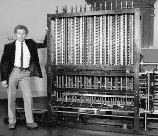

Tal camino se inicia con los planos de Babbage y la primera impresora del mundo.
Tras ese inicio que no se materializaría del todo, se crea la impresora eléctrica para computadoras.
Posteriormente se innovaría la tecnología con la aplicación de impresiones por matriz de punto. Estas impresoras se caracterizaron por reproducir textos.
En 1959 con la creación de la fotocopiadora, las cosas irían cambiando gracias a Xenon. Años más tarde el color sería parte de las fotocopiadoras en 1973 creadas por la empresa Canon.
En el año 1978 se crea una impresora con calidad comprobada, pues esta tenía la facultad de imprimir con legibilidad así como lo hacían las máquinas de escribir. Esta impresora es conocida como la impresora margarita.
Las impresiones cambiarían totalmente tanto sus técnicas como la calidad de sus reproducciones. La impresión por láser sería otra apuesta en la historia de las impresoras. Esta tecnología fue inventada por Xerox Gary Starkweather, quien desarrollaría las ideas propuestas y las teorías de Chester Carlson.
En 1980 se comienza a utilizar este sistema en blanco y negro. Bastaría un lapso de 8 años para que las impresoras a láser incluyeran los colores.
En la actualidad, la industria dedicada a este tipo de rubros busca la posibilidad de realizar maquinarias de reproducción personal que sean de fácil adquisición para los clientes. Por lo que se han inventado nuevas tecnologías de bajo costo y consumo. Una de ellas es la impresora de sistema continuo o también conocida como las impresoras de inyección de tinta continuo.
impresoras antiguas
Este tipo de impresoras ha sido unas de las más populares, ya que ofrece calidad en la reproducción de textos e imágenes a un muy bajo costo. Estas impresoras han sido llevadas al mercado por empresas como Epson, Hp y Canon.
Por último, uno de los propósitos de los fabricantes de impresoras es brindar facilidad en el uso de los equipos. Además realizar varias operaciones con menos cantidad de productos. Ejemplo de ello ha sido la impresora multifuncional.
Este dispositivo funcionaría como un escáner para digitalizar documentos e impresora a la vez. Incluso, la impresora multifuncional también funciona como una fotocopiadora personal. Algunos de los fabricantes más destacados en este tipo de dispositivos son: Canon, Epson, Lexmark, Hp y Xerox. Cabe destacar que en 1998 fue el año en el que se introduce en la competencia y en la historia de impresora las multifuncionales.